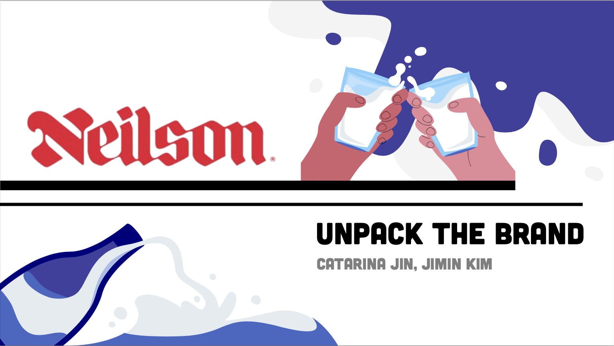

Creative Works
Here is a collection of my creative projects, showcasing my passion for design and storytelling.
Project Highlights
-
Rebranding Neilson Dairy:
A fresh logo and branding strategy.
Project Videos
- Neilson Advertisement: https://www.youtube.com/watch?v=yIVa3OXgLUU
- Neilson Social Video 1: https://www.youtube.com/shorts/S6w0Jvud2NY
- Neilson Social Video 2: https://www.youtube.com/shorts/fMG-p_Ldkvc
- Neilson Social Video 2: https://www.youtube.com/shorts/xyRmoxojDPI
-
Logo Design of My Life:
Creating a logo based on my life.
Mockups:
-
Comic Creation:
A humorous story brought to life through illustration.